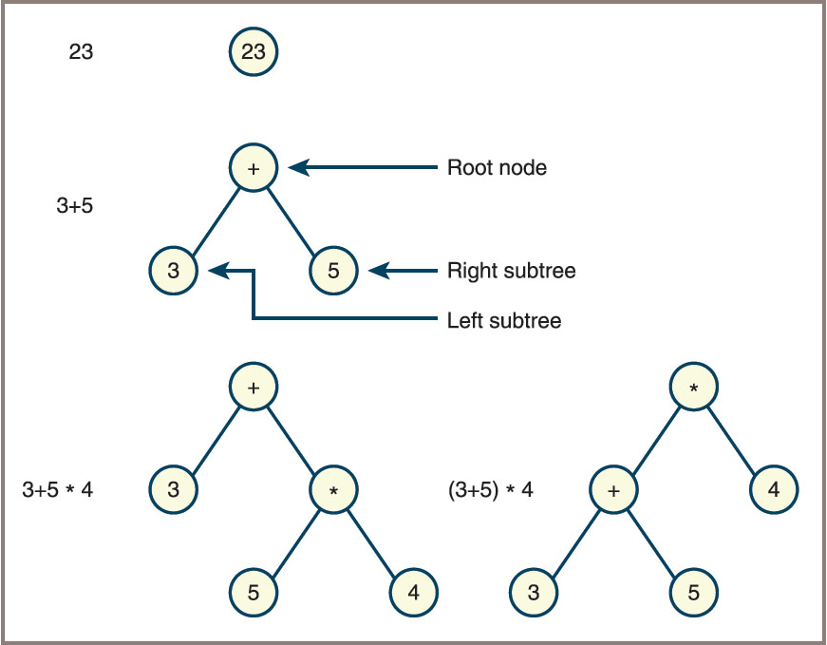

TREES STRUCTURE (3)
Fred Agbo
2025-11-05
Announcements
- Short homework: PS5 is posted at the end of this slides
- Due next Monday
- Submission is
PDFfile and on Canvas
- Todays Lecture:
- Discuss Expression Trees
- Array-based Trees
- Heaps implementation
- Complete the
LinkedBSTclass
Expression Trees
- A way to process sentences is to build a parse tree during parsing
- For a language of expressions
- This structure is also called an expression tree
- Points to remember:
- An expression tree is never empty
- Each interior node represents a compound expression, consisting of an operator and its operands
- Each leaf node represents an atomic, numeric operand
- Operators of higher precedence usually appear near the bottom of the tree, unless they are overridden in the source expression by parentheses
Expression Trees
Grammars, parsing, and a descent-parsing strategy
- A grammar consists of a few parts:
- A
vocabulary(ordictionaryorlexicon) consisting of words and symbols allowed in sentences in the language - A set of syntax rules that specify how symbols in the language are combined to form sentences
- A set of semantic rules that specify how sentences in the language should be interpreted For example, the statement
x = ymight mean “copy the value ofyto the variablex
- A
Grammars: Example
- The following grammar defines the syntax and vocabulary of a little language/expression
4 + 3 − 2
Grammar: BNF
- This type of grammar above is called an Extended Backus-Naur Form (EBNF) grammar
- An EBNF grammar uses three kinds of symbols:
Terminal symbols—These symbols are in the vocabulary of the language and literally appear in programs in the language—for instance, + and * in the preceding examplesNonterminal symbols—These symbols name phrases in the language, such as expression or factor in the preceding examplesMetasymbols—These symbols are used to organize the rules in the grammar
Grammar: Metasymbols
| Metasymbol | Meaning |
|---|---|
"..." |
Enclose literal items |
= |
Means “is defined as” |
[ ... ] |
Enclose optional items |
{ ... } |
Enclose zero or more items |
( ... ) |
Group together required choices |
| |
Indicates a choice |
Recognizing, Parsing, and Interpreting Sentences
- To process sentences in a language you use:
Recognizer– analyzes a string to determine if it is a sentence in a given languageParser– has all the features of a recognizer and returns information about the syntactic and semantic structure of a sentenceInterpreter– carries out the actions specified by a sentence
Parser Operation
- When developing a parser:
- It is convenient to assign the task of recognizing symbols in a string to a lower-level module called a
scanner
- It is convenient to assign the task of recognizing symbols in a string to a lower-level module called a
- Scanner performs
lexical analysis- In which individual words are picked out of a stream of characters
- Output of the scanner is a stream of words called
tokens- These become the input to a
syntax analyzerthat uses the tokens and the grammar rules to determine whether the program is syntactically correct
- These become the input to a
Lexical Analysis and the Scanner

- A scanner and parser working in tandem
Array Implementation of Binary Trees
An Attempt
- An array-based implementation of a binary tree is also possible, but it is difficult to define and practical only in some special situations
When the tree is complete


Array Implementation of Binary Trees
In an array-based implementation, the elements are stored by level

We can compute locations of items on the array-based
complete binary tree:Item Location Parent (i − 1) // 2 Left sibling (if any) i − 1 Right sibling (if any) i + 1 Left child (if any) i * 2 + 1 Right child (if any) i * 2 + 2

Why difficult to implement array-based incomplete trees?
Wasted Space:
- If the tree is not complete, many array positions will be unused (null or empty), leading to inefficient memory usage.
Indexing Complexity:
- The simple formulas (2*i+2) assume every possible child exists. For missing nodes, you must track which indices are valid, complicating traversal and updates.
Insertion/Deletion Issues:
- Adding or removing nodes can require shifting many elements or leave gaps, making the array harder to manage.
Loss of Structure:
- The array no longer visually represents the tree’s shape, making debugging and visualization difficult.
Heap Implementation
- A heap is a type of binary tree in which smaller data items are located near the root
- Heap implementation uses
min-heapto design apriority queue - interface requires methods to return its
size,add,remove,peek, etc - The two most critical heap operations are:
addmethod – expects a comparable element as an argument and inserts the element into its proper place in the heappopmethod – deletes the topmost node in the heap, returns the element contained there, and maintains the heap property
- The
peekoperation returns but does not remove the topmost element in a heap
Heap Interface
| Method | What It Does |
|---|---|
| heap.isEmpty() | Returns True if heap is empty or False otherwise. |
| heap.__len__() | Same as len(heap). Returns the number of items in heap. |
| heap.__iter__() | Same as iter(heap) or for item in heap:. Visits the items from least to greatest. |
| heap.__str__() | Same as str(heap). Returns a string that shows the shape of the heap. |
| heap.__contains__(item) | Same as item in heap. Returns True if item is in the heap or False otherwise. |
| heap.__add__(otherHeap) | Same as heap + otherHeap. Returns a new heap with the contents of heap and otherHeap. |
| heap.__eq__(anyObject) | Same as heap == anyObject. Returns True if heap equals anyObject or False otherwise. |
| heap.peek() | Returns the topmost item in heap. Precondition: heap is not empty. |
| heap.add(item) | Inserts item in its proper place in heap. |
| heap.pop() | Removes and returns the topmost item in heap. Precondition: heap is not empty. |
Heap Implementation: Note
- Heap implementation uses
min-heapto design apriority queue - Its tructure is similar to the array represnetation of binary tree seen earlier
- Each node is stored at a specific index in the array:
- The root is at index 0 (or 1, depending on convention).
- For a node at index
i:- Left child is at index
2*i + 1 - Right child is at index
2*i + 2 - Parent is at index
(i - 1) // 2
- Left child is at index
- Each node is stored at a specific index in the array:
- But be careful to maintain the properties of
min-heap.- Each node is less than either of its children.
Heap Implementation: Add Method
def add(self, item):
self.size += 1
self.heap.append(item)
curPos = len(self.heap) - 1
while curPos > 0:
parent = (curPos - 1) // 2 # Integer quotient!
parentItem = self.heap[parent]
if parentItem <= item: # Found the spot
break
else: # Continue walking up
self.heap[curPos] = self.heap[parent]
self.heap[parent] = item
curPos = parentHeap Implementation: Pop Method
Strategy for removals:
- Begin by saving pointers to the top element and the bottom element in the heap and by moving the element from the bottom of the heap to the top
- Walk down the heap from the top, moving the smallest child up one level, until the bottom of the heap is reached
Heap Implementation: Pop Method
def pop(self):
if self.isEmpty():
raise AttributeError("Heap is empty")
self.size -= 1
topItem = self.heap[0]
bottomItem = self.heap.pop(len(self.heap) - 1)
if self.isEmpty():
return bottomItem
self.heap[0] = bottomItem
lastIndex = len(self.heap) - 1
curPos = 0
while True:
leftChild = 2 * curPos + 1
rightChild = 2 * curPos + 2
if leftChild > lastIndex:
break
if rightChild > lastIndex:
maxChild = leftChild
else:
leftItem = self.heap[leftChild]
rightItem = self.heap[rightChild]
if leftItem < rightItem:
maxChild = leftChild
else:
maxChild = rightChild
maxItem = self.heap[maxChild]
if bottomItem <= maxItem:
break
else:
self.heap[curPos] = self.heap[maxChild]
self.heap[maxChild] = bottomItem
curPos = maxChild
return topItemLinkedBST Code
- use this link to download the codes.
Homework: PS5: submission on Canvas
Instruction:
- Test the completed
LinkedBSTclass implementation as discussed in the class and ensure that the codes are working as expected. - Complete all the tasks below
- Submit your solution as
PDFto Canvas page created for this homework
Tasks 1:
- Add the methods
heightandisBalancedto theLinkedBSTclass. Theheightmethod returns the height of the tree, as defined in this chapter. TheisBalancedmethod returnsTrueif the height of the tree is less than twice the \(log_2\) of its number of nodes, orFalseotherwise.
Homework: PS5
Tasks 2:
Analyze your binary tree program output by completing the following:
Take a screenshot after completing Task 1 and running your program in the terminal. The screenshot should show the output starting from
========Wonder Tree:============.Using the tree shown in your screenshot, draw its hierarchical (top-to-bottom, pyramid-like) structure.
Describe the shape of your binary tree (e.g., perfectly balanced, unbalanced, complete, or full).
List all the leaf nodes in your tree.
List all nodes at level 2.
For your tree, provide the node visitation order for each of the following traversal algorithms:
- Inorder
- Preorder
- Postorder
- Level order
Next Week Reading:
- FDS - Lambert
- Chapter 12
- DS&A - John et al.
- Chapter 14